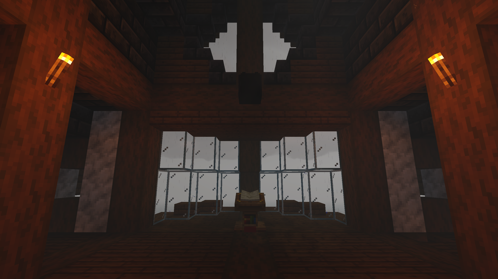
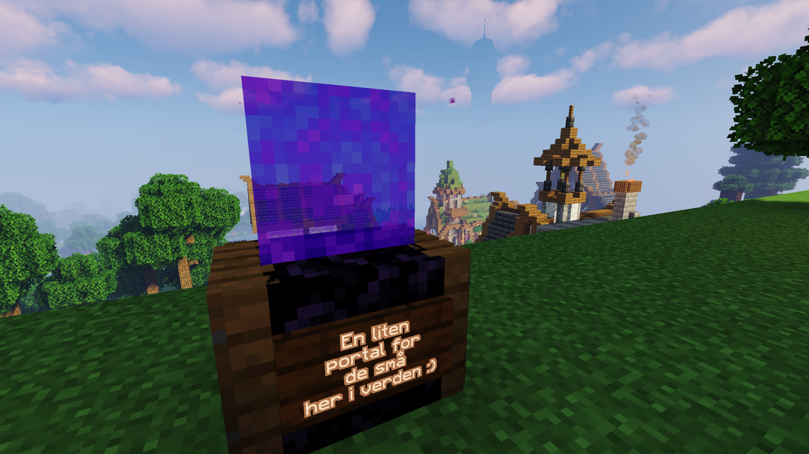
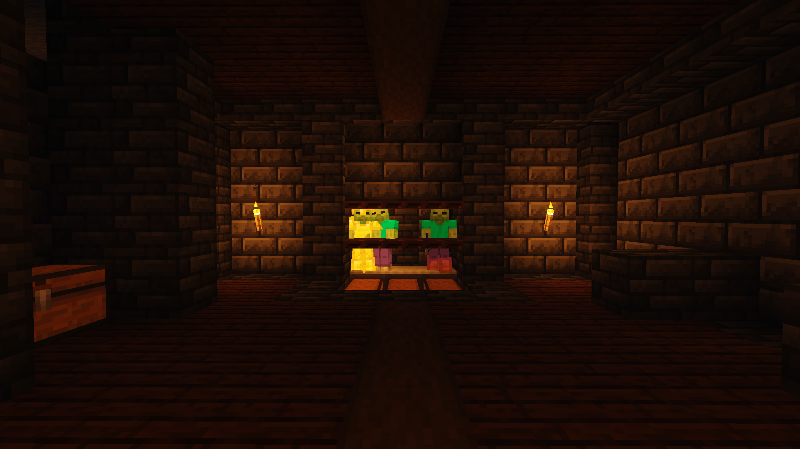
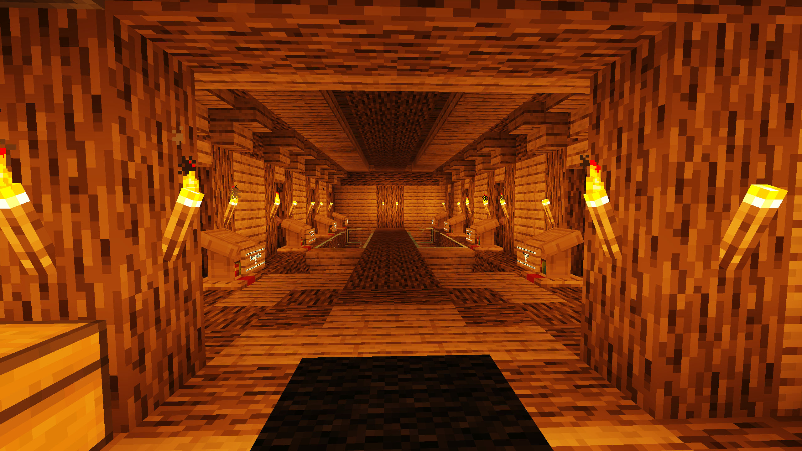

Serveren
ChillVille er en lokal server som spiller på av 11 spillere.
Serveren har ikke vært åpen i mer enn en måned, men det har skjedd og blitt bygd mye.
Med en god start, ser vi fram mot en lys framtid.
1 / 13

2 / 13

3 / 13

4 / 13

5 / 13

6 / 13

7 / 13

8 / 13

9 / 13

10 / 13

11 / 13

12 / 13

13 / 13

Galleri
Selv om det ikke er en gammel server, er det fortsatt bygd masse. Fra hus og underjordiske baser, til Farms og åkere